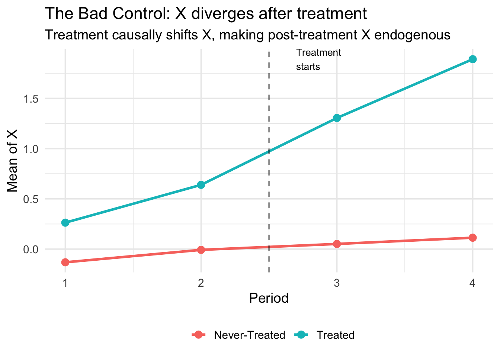

library(badcontrols)
library(pte)
library(ggplot2)
library(dplyr)
set.seed(20240301)Worked Example
This walkthrough uses simulated data where the true ATT is known, so you can verify that the estimators recover the correct answer.
Setup
Part 1: Simulate data
We simulate a staggered DiD dataset where:
- Treatment directly affects \(Y\) (direct ATT = 0.2)
- Treatment also shifts \(X_t\) by \(\theta = 0.8\) (bad control!)
- \(X_t\) affects \(Y_t\) with coefficient \(\beta = 1.0\)
- True total ATT = \(0.2 + 1.0 \times 0.8 = 1.0\)
sim <- simulate_bad_controls(
n = 2000,
T_max = 4,
direct_att = 0.2,
x_effect_on_y = 1.0,
treatment_effect_on_x = 0.8
)
cat("True ATT:", sim$true_att, "\n")True ATT: 1 cat("Periods:", sort(unique(sim$data$period)), "\n")Periods: 1 2 3 4 cat("Treatment groups:", sort(unique(sim$data$G)), "\n")Treatment groups: 0 3 4 The data has 8000 rows (panel of 2000 units over 4 periods).
Part 2: Visualize the problem
Treatment causally shifts \(X_t\), creating divergent paths between treated and control groups after treatment onset:
x_means <- sim$data |>
mutate(Group = ifelse(G > 0, "Treated", "Never-Treated")) |>
group_by(Group, period) |>
summarize(mean_X = mean(X), .groups = "drop")
ggplot(x_means, aes(x = period, y = mean_X, color = Group)) +
geom_line(linewidth = 1.2) +
geom_point(size = 3) +
geom_vline(xintercept = 2.5, linetype = "dashed", alpha = 0.5) +
annotate("text", x = 2.7, y = max(x_means$mean_X),
label = "Treatment\nstarts", hjust = 0, size = 3.5) +
labs(
title = "The Bad Control: X diverges after treatment",
subtitle = "Treatment causally shifts X, making post-treatment X endogenous",
x = "Period", y = "Mean of X", color = ""
) +
theme_minimal(base_size = 14) +
theme(legend.position = "bottom")
After treatment onset (period 3), the treated group’s \(X\) jumps up. This is the treatment effect on \(X\) — the source of the bad control problem. If you condition on post-treatment \(X\), you absorb part of the treatment effect.
The role of W
In the simulation, \(W\) is a pre-treatment variable that confounds both treatment \(D\) and the covariate \(X_t\). Looking at the DAG: \(D \leftarrow W \rightarrow X_t(0)\). Without conditioning on \(W\), the imputation model would inherit this confounding — even after controlling for \(X_{t-1}\) and \(Z\).
In bc_att_gt(), we include \(W\) via the xformla argument. The imputation model estimated among controls is:
\[ X_t = \hat{f}(X_{t-1}, W, Z) \]
and the predicted \(\hat{X}_t(0)\) for treated units uses their own pre-treatment values of \(X_{t-1}\), \(W\), and \(Z\).
See the Estimation page for more on when \(W\) is needed and what can serve as \(W\).
Part 3: Compare estimators
We compare five approaches. Only our two proposed methods (imputation and DR/ML) should recover the true ATT = 1.0.
Method 0: Naive DiD (no covariates)
Ignores \(X\) entirely. Biased if parallel trends requires conditioning on \(X\).
res_naive <- pte_default(
yname = "Y", gname = "G", tname = "period", idname = "id",
data = sim$data, d_outcome = TRUE, est_method = "reg"
)
att0 <- extract_att(res_naive)
cat("ATT:", round(att0$att, 4), " (SE:", round(att0$se, 4), ")\n")ATT: 1.355 (SE: 0.0265 )Method 1: Include \(X_t\) directly (bad control)
Conditions on post-treatment \(X_t\). Classic bad control bias.
res_bad <- pte_default(
yname = "Y", gname = "G", tname = "period", idname = "id",
data = sim$data, d_outcome = TRUE,
d_covs_formula = ~X, est_method = "reg"
)
att1 <- extract_att(res_bad)
cat("ATT:", round(att1$att, 4), " (SE:", round(att1$se, 4), ")\n")ATT: 0.3418 (SE: 0.0291 )Method 2: Pre-treatment \(X\) only
Uses time-invariant covariates \(Z\). Works under restrictive conditions.
res_pretreat <- pte_default(
yname = "Y", gname = "G", tname = "period", idname = "id",
data = sim$data, d_outcome = TRUE,
xformla = ~Z + W, est_method = "reg"
)
att2 <- extract_att(res_pretreat)
cat("ATT:", round(att2$att, 4), " (SE:", round(att2$se, 4), ")\n")ATT: 1.0278 (SE: 0.0243 )Method 3: Imputation (our proposal)
Imputes the counterfactual \(X_t(0)\) for treated units, then runs DiD.
res_imp <- bc_att_gt(
yname = "Y", gname = "G", tname = "period", idname = "id",
data = sim$data,
bad_control_formula = ~X,
xformla = ~Z + W,
est_method = "imputation",
lagged_outcome_cov = FALSE
)
att3 <- extract_att(res_imp)
cat("ATT:", round(att3$att, 4), " (SE:", round(att3$se, 4), ")\n")ATT: 1.0133 (SE: 0.0046 )Method 4: Doubly Robust ML (our proposal)
Combines the imputation approach with an AIPW correction using random forest propensity scores (cross-fitted via grf). Consistent if either the outcome model or the propensity score is correctly specified.
res_ml <- bc_att_gt(
yname = "Y", gname = "G", tname = "period", idname = "id",
data = sim$data,
bad_control_formula = ~X,
xformla = ~Z + W,
est_method = "dr_ml",
lagged_outcome_cov = FALSE
)
att4 <- extract_att(res_ml)
cat("ATT:", round(att4$att, 4), " (SE:", round(att4$se, 4), ")\n")ATT: 1.0308 (SE: 0.0287 )Part 4: Comparison table
results <- data.frame(
Method = c(
"Naive DiD (no covariates)",
"Include X_t (bad control)",
"Pre-treatment X only",
"Imputation (proposed)",
"DR/ML (proposed)"
),
ATT = c(att0$att, att1$att, att2$att, att3$att, att4$att),
SE = c(att0$se, att1$se, att2$se, att3$se, att4$se)
)
results$Bias <- results$ATT - sim$true_att
results$CI_lower <- results$ATT - 1.96 * results$SE
results$CI_upper <- results$ATT + 1.96 * results$SE
knitr::kable(
results,
digits = 4,
col.names = c("Method", "ATT", "SE", "Bias", "CI Lower", "CI Upper"),
caption = paste0("Comparison of estimators (True ATT = ", sim$true_att, ")")
)| Method | ATT | SE | Bias | CI Lower | CI Upper |
|---|---|---|---|---|---|
| Naive DiD (no covariates) | 1.3550 | 0.0265 | 0.3550 | 1.3030 | 1.4070 |
| Include X_t (bad control) | 0.3418 | 0.0291 | -0.6582 | 0.2847 | 0.3988 |
| Pre-treatment X only | 1.0278 | 0.0243 | 0.0278 | 0.9801 | 1.0755 |
| Imputation (proposed) | 1.0133 | 0.0046 | 0.0133 | 1.0044 | 1.0223 |
| DR/ML (proposed) | 1.0308 | 0.0287 | 0.0308 | 0.9744 | 1.0871 |
The naive DiD and bad control approaches are biased. The pre-treatment \(X\) approach may or may not work depending on the DGP. Our imputation and DR/ML methods recover the true ATT.
Part 5: Summary
TipKey takeaways
- Including post-treatment \(X_t\) directly: biased (bad control)
- Dropping \(X_t\) entirely: may violate parallel trends
- Using pre-treatment \(X_{t-1}\) only: works under restrictive conditions
- Imputation: impute \(X_t(0)\) for treated, then DiD — our method
- DR/ML: imputation + AIPW with random forest propensity scores — our method
Methods 4 and 5 require Covariate Unconfoundedness: \(X_t(0) \perp\!\!\!\perp D \mid X_{t-1}, W, Z\)
For the full theoretical treatment, see Caetano, Callaway, Payne, and Sant’Anna (2024).